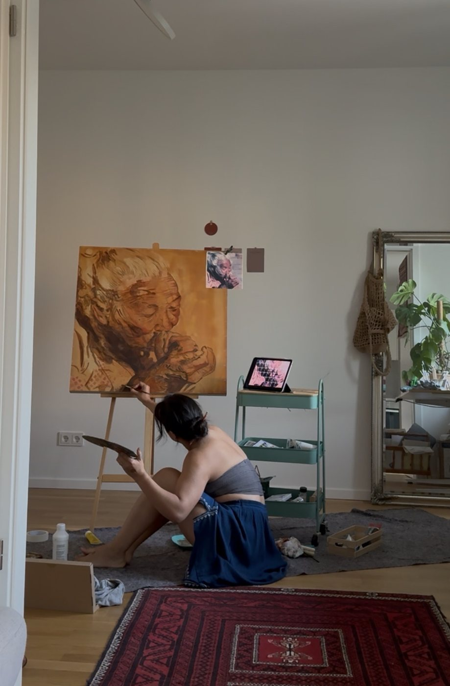

Srijana GS
Autodidaktische Künstlerin, die in Acryl und Aquarell arbeitet — Gesichter, Erinnerungen und stille Augenblicke, mitgenommen aus Nepal und aus jedem Ort, an den das Leben sie seitdem geführt hat.

Malen als eine Art, genau hinzusehen
Srijana ist eine autodidaktische Künstlerin und arbeitet in Acryl, Aquarell und Mischtechnik — Porträts von Menschen, denen sie über Fotografien, Erinnerungen und auf Reisen begegnet, daneben Landschaften und stille Stillleben von Blumen, die sie selbst gezogen oder unterwegs gesammelt hat.
Ihre Porträts kehren immer wieder zu Gesichtern zurück, die eine Geschichte tragen: Honigjäger aus den Bergen Nepals, Mütter, die ihre Kinder durch die Kälte tragen, ein Kind, das von einem Tier getröstet wird, während es auf jemanden wartet. Sie sucht Ausdrücke, in denen Härte und stille Würde zugleich liegen.
Ein Bild reiste mit ihr von Thailand nach Deutschland und weiter nach Neuseeland, vor einer Promotion — mitgenommen nicht, weil es fertig war, sondern weil, wie sie sagt, das Fertigwerden eines Bildes sich wie eine eigene stille Trauer anfühlen kann. Heute lebt sie in Leipzig und lernt weiter — zuletzt inspiriert von der Arbeit des Malers Thomas Braun und einer wachsenden Liebe zum Impressionismus.
Galerie
Fünfundzwanzig Bilder — Porträts, Landschaften und Stillleben. Klicken Sie auf ein Werk, um es größer zu sehen.


Über das Fertigwerden eines Bildes
„Da ist diese besondere Art von Traurigkeit, wann immer ich ein Bild beende. Es fühlt sich an wie das Ende von etwas — wie das Ende einer Nähe, wie eine Tür, die zugeht.“
„Vielleicht liegt es daran, dass ich die Schönheit mehr im Prozess finde als im Ergebnis — im Werden, in den Möglichkeiten und der Ungewissheit eines unfertigen Bildes.“
— Srijana, aus ihrem Atelier in Leipzig
Auftragsarbeiten, Preise & Anfragen
Jedes Bild auf dieser Seite ist ein Original, und die meisten sind verfügbar. Der Preis hängt von Größe, Technik und Rahmung ab — schreiben Sie einfach mit dem Titel des Bildes, das Sie interessiert, und Sie bekommen in der Regel innerhalb von zwei Tagen eine Antwort.
srijana.art.gallery@gmail.com